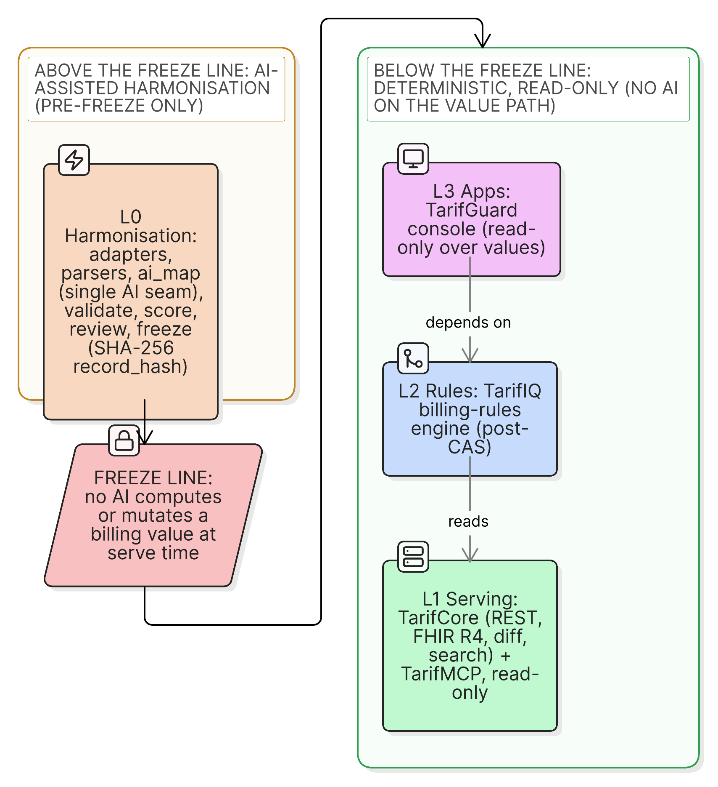

tarifhub
Swiss ambulatory tariff data, made trustworthy.
The problem
Tariff data you cannot trust is worthless.
- Many sources, four languages, constant new versions
- A billing value must be exact, traceable, reproducible
- Trust, meaning determinism, is the product
3 sources·4 languages
·N versions
→1 certified value
The idea
Four layers.
One freeze line.
- L0 harmonise: AI-assisted, pre-freeze
- Freeze line: records become immutable, hashed
- L1 to L3 serving: fully deterministic

How I started
An empty repo and a definition of done.
- Not a backlog: a falsifiable "done"
- Outcome prompts, not step-by-step scripts
- One human gate: I approve the plan
How it was built
/ship: a multi-model assembly line.
- Orchestrator plans, workers build test-first
- An independent model reviews every PR
- Nine phases, one human gate: the plan

The headline
The machine writes its own next step.
- Fixed loop: replays a known list
- Self-prompting loop: optimises a moving target
- Runs unattended; checkpoints its state

The intellectual core
Autonomy is safe because the boundary is enforced.
- Fitness ratchet: ~60 checks, never regress
- Freeze-line guard plus a boundary test
- Green-contract: merge only on full green

Quality and CI/CD
Every change passes the gates a reviewer would.
- A second model family reviews every PR
- Full CI: lint, tests, boundary, secrets, SBOM
- Docs and diagrams generated by the loop

Observable end to end
The whole system is inspectable while it runs.

Shipboard: the live /ship pipeline, per-agent cost, and the CAS grading floor. Captured while this deck was being built.
What I learned
An enforced, tested definition of done is what makes AI autonomy trustworthy.
- Give the system a gradient it can measure
- And boundaries it cannot cross
- The method is now a reusable framework
Thank you.
- Code: github.com/erhanuenlue/tarifhub
- Docs: the arc42 and AI-method site (MkDocs)
- Built above a freeze line you can trust.